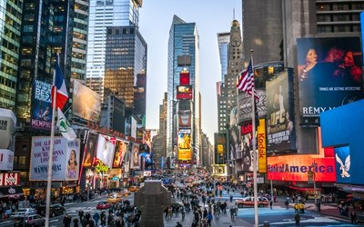
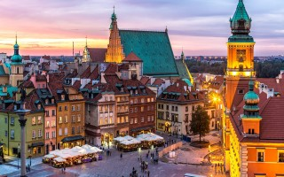

Lille
Ville (Capitale des Hauts-de-France)

Lille est la capitale des Hauts-de-France, une région du nord de la France. Elle se trouve à proximité de la frontière belge. Aujourd'hui centre culturel et ville universitaire animée, elle fut autrefois une importante plateforme marchande des Flandres françaises, et de nombreuses influences flamandes demeurent encore. Le centre historique, le Vieux Lille, se caractérise par ses maisons de ville du XVIIe siècle en briques rouges, ses ruelles piétonnes pavées et sa Grand'Place centrale.
Québec
Ville

la capitale nationale du Québec, une des provinces du Canada. Située au cœur de la région administrative de la Capitale-Nationale, elle est le siège de nombreuses institutions dont le Parlement du Québec. En date de juillet 2016, la ville de Québec compte 531 902 habitants et sa communauté métropolitaine regroupe une population de 807 200.
New York
Ville

New York est une ville composée de 5 arrondissements à l'embouchure du fleuve Hudson et de l'océan Atlantique. En son centre se trouve Manhattan, un arrondissement densément peuplé faisant partie des principaux centres commerciaux, financiers et culturels du monde. Ses sites incontournables comprennent des gratte-ciel comme l'Empire State Building et l'immense Central Park. Le théâtre de Broadway est situé sur Times Square.
Varsovie
Ville/Capitale/Village


Très belle ville à visiter ! Je conseil le grande place avec le palais! La monnaie est le Zolty.
Burbure
Ville/Capitale/Village
Insérez description...
Moscou
Ville/Capitale/Village

Moscou (en russe : Москва, Moskva, [mɐˈskva]) est la capitale de la Russie et compte douze millions d'habitants intra muros (2017) sur une superficie de 2 510 km2 ce qui en fait la ville la plus peuplée à la fois du pays et d'Europe. Sur le plan administratif Moscou fait partie du district fédéral central et a le statut de ville d'importance fédérale qui lui donne le même niveau d'autonomie que les autres sujets de la Russie. Elle est quasiment enclavée dans l'oblast de Moscou, mais en est administrativement indépendante. Ses habitants sont les Moscovites. Moscou se situe dans la partie européenne de la Russie au milieu d'une région de plaine. Sa latitude élevée lui vaut un climat froid et continental. Le Kremlin, son cœur historique, est édifié sur une colline qui domine la rive gauche de la rivière Moskova.
Albuquerque
Nouveau Mexique

C'est la ville principale de la meilleure serie du monde Breaking Bad !!!
Cuincy
Ville/Capitale/Village
Insérez description...
Vancouver
Ville

Ville de l’ouest, Vancouver est réputée pour la qualité de vie qu’elle offre et pour la douceur de son climat dans un pays généralement glacial. Car ici, on sort, on court et on profite activement d’un relief idéal, entre mer et montagne.
Marly-Gomont
Ville/Capitale/Village
Insérez description...
Ferfay
Ville/Capitale/Village
Insérez description...
Osaka
Ville au Japon

Osaka une métropole japonaise situé dans la région du Kansai, troisième plus grande municipalité au niveau nationnal, la ville compte plus de 2,5 millions d'habitants. (Photo: Chateau d'Osaka)